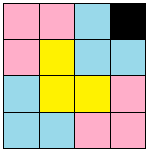

Có một khoảng sân hình vuông kích thước n x n ô vuông, gồm n hàng và n cột, trong đó n là số nguyên có dạng lũy thừa của 2 (n = 2k). Đánh số hàng từ 1 đến n theo thứ tự từ trên xuống dưới, đánh số cột từ 1 đến n theo thứ tự từ trái qua phải. Có một đồng hồ nước đang nằm tại ô (y, x), dòng y cột x. Người ta muốn lát các ô còn lại trong sân bằng gạch hình chữ L kích thước 3 ô vuông (xem hình dưới, đồng hồ nước là ô (1,4)). Bạn hãy lập phương án để lát sân nhé.

Số ô vuông trong sân: n2 = 22k = 4k. Số ô cần lát: n2-1 = 4k - 1 = 3A với A là số viên gạch cần dùng.
Dữ liệu nhập:
- Là 3 số nguyên n, y, x cách nhau một khoảng trắng (2 ≤ n ≤ 256; 1 ≤ y, x ≤ n; n có dạng lũy thừa của 2).
Dữ liệu xuất:
- Nếu không có đáp án, in ra -1.
- Nếu có đáp án: dòng đầu tiên là số nguyên A biểu thị số viên gạch cần dùng.
Trong A dòng tiếp theo, mỗi dòng gồm 6 số nguyên Y1, X1, Y2, X2, Y3, X3, mỗi số cách nhau một khoảng trắng. 6 số nguyên trên biểu thị một viên gạch. (Y1, X1), (Y2, X2), (Y3, X3) là 3 ô của viên gạch.
Nếu có nhiều đáp án, in ra một đáp án bất kỳ. Trong một viên gạch thứ tự của 3 ô là không quan trọng, miễn là 3 ô ghép lại thành hình chữ L.